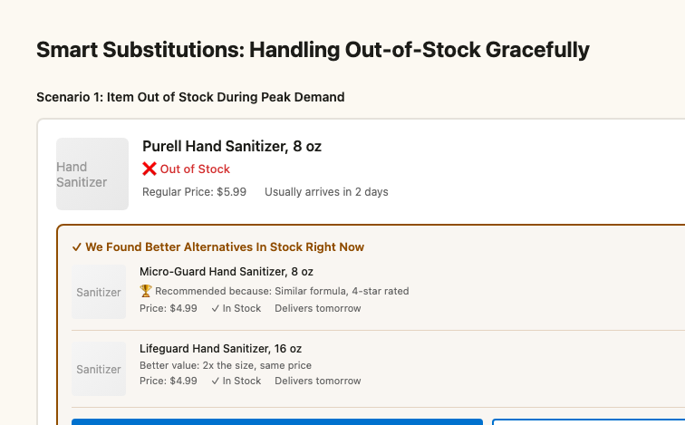

Walmart.com — Search, Help, and Post-Sale Design at Enterprise Scale
COVID tripled Walmart.com's digital traffic in a matter of weeks. The infrastructure held. The experience didn't always. I owned five surfaces — search, personalisation, PDP, help, and post-sale — across web and three mobile apps, and had one year to make them coherent.
The Situation
Walmart.com had scale no one else could match — the largest physical retail footprint in the world as an inventory advantage for digital. But the commerce experience was designed like a catalogue. Discovery, help, and post-sale were three separate worlds with no connective tissue between them.
The design organisation was structured by funnel slice: three design leaders, each owning a section. I owned the mid-to-lower funnel — search, personalisation, the bottom half of the product detail page, help flows, and what happened after a customer placed an order. The work was making the handoffs invisible.

Three Decisions
The conventional design assumption was that customers who needed help had already left the shopping journey — the task was to get them back. I disagreed. The moment someone looks for help is still a moment inside the journey, and if you handle it well, they don't leave.
I redesigned the help flow from a separate service destination into a contextual layer embedded in the commerce experience — answers surfaced in context, not behind a contact form. This meant unifying contact across web, mobile, chat, phone, and social into a single coherent model rather than five separate escalation paths.
The design decision was about information architecture: help signals are product and order signals. A customer asking "where is my order?" is still a customer. The support UI needed to know that.

The help framework: unified contact model across channels, embedded in the shopping flow

Search results, the product detail page, and out-of-stock handling were designed by different teams and felt like it. A customer's journey from "search for pasta" to "add to cart" crossed three disconnected surfaces, each with different interaction logic.
My scope covered the seam between search results and the PDP bottom-fold — the decision-making zone where customers choose, compare, and commit. I focused on making personalisation useful at this moment (not just decorative), and on making the out-of-stock experience a continuation rather than a dead end.
Smart substitutions — proactively offering alternatives when items were unavailable — came from this thinking. The experience below shows the principle: keep the customer in the shopping flow by giving them a decision, not a failure message.
Smart substitutions — work designed during 2020–2021, demoed in this later product walkthrough


With three design leaders each owning a slice of the funnel, the easiest failure mode was to optimise within your section and ignore what happened at the edges. I made a deliberate choice to treat the handoffs as my problem — not theirs — which meant understanding the decisions being made upstream and downstream of my surfaces and designing for continuity.
In practice this was cross-team design alignment: shared principles for how we communicated out-of-stock, how personalisation signals propagated from search to PDP, how post-sale entry points were surfaced in the order confirmation flow rather than buried in account settings. It wasn't glamorous, but at this scale, incoherence across funnel sections costs real conversion.
I also proposed a social commerce concept — collaborative, real-time shopping for a period when people couldn't shop together in person. The concept was developed and handed off; the thinking contributed to how Walmart approached the social layer of the commerce experience.
Shop with Friends — a social commerce concept proposed during this tenure; this demo shows the experience as it evolved post-handoff


The Results


What Made It Notable
- Ownership scope: Five surfaces simultaneously across four platforms (web + three mobile apps) is an unusually broad remit. The constraint forced explicit prioritisation of cross-surface coherence over in-surface refinement.
- Help as commerce: Treating the help surface as part of the shopping journey — not a separate service destination — was a design position that ran against how the org thought about support. Making it stick required writing the information architecture rationale, not just designing the screens.
- Distributed team coherence: 20–30 people across India and the US, during a period of fully remote collaboration, on a product experiencing 3× normal load. The team shipped without regressing existing experiences — which is harder than it sounds.
- Operated during a once-in-a-generation traffic event: Every decision made in 2020–2021 was made under load. There was no quiet period to refactor or revisit. Design decisions had to be right-enough the first time.